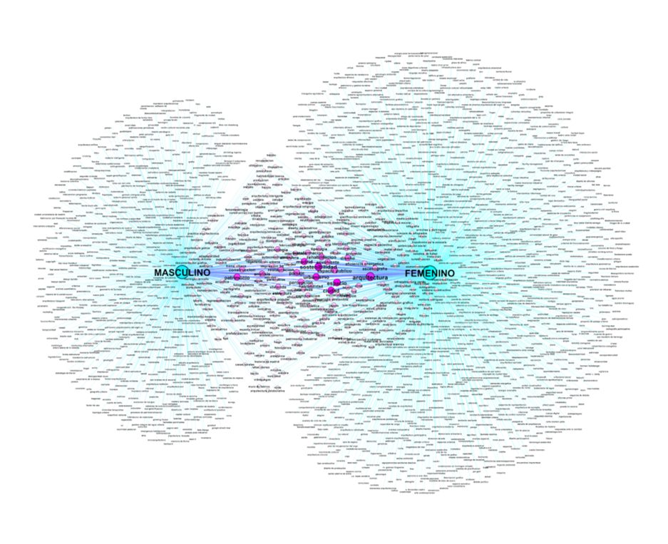
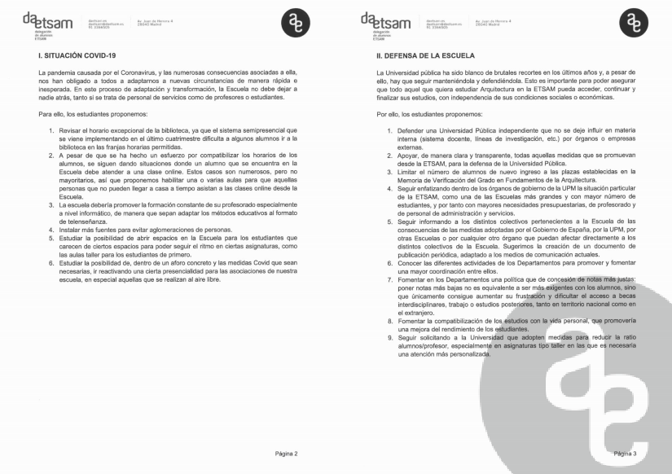
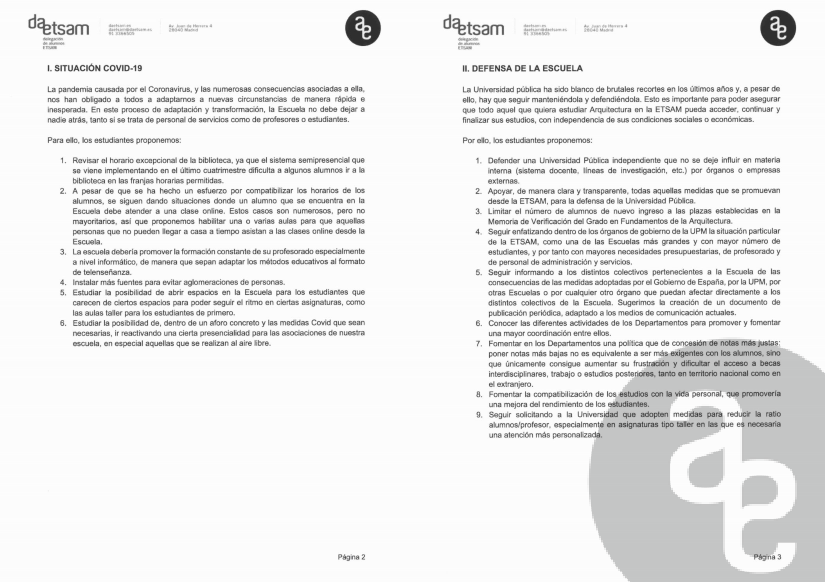
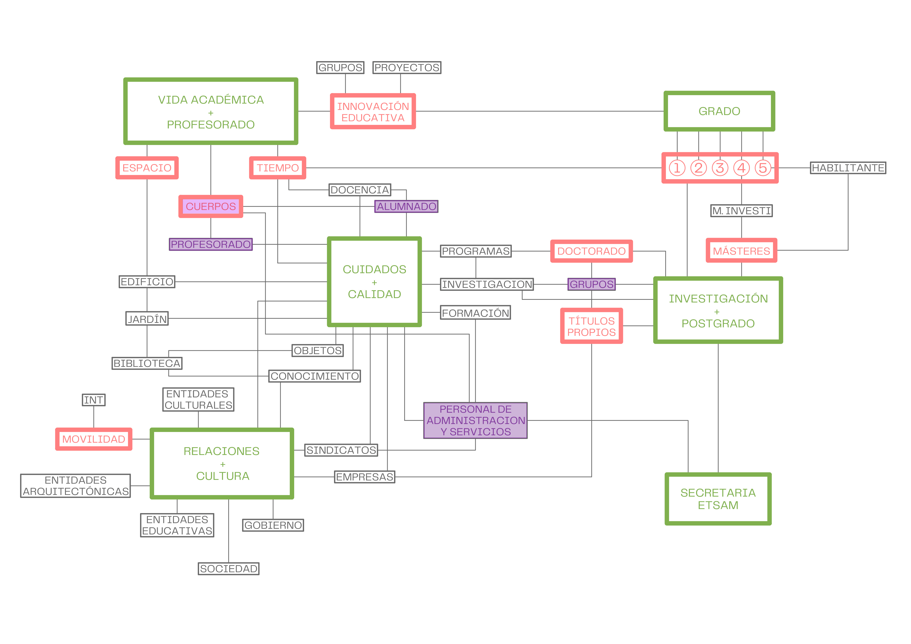
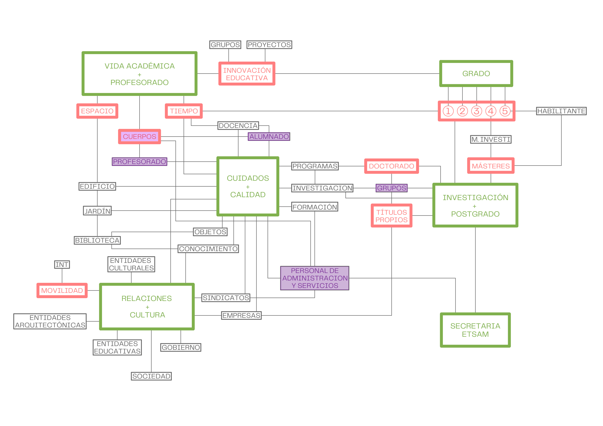

Il y a un autre monde mais il est dans celui-ci. (Paul Eluard)
Quienes me conocen saben que esta es una de las muchas frases que me gusta robar y manipular: hay otras escuelas, pero están en esta. Cuando yo estudiaba la carrera, ya había algunas realidades superpuestas en nuestra etsam y era lo mejor. En aquel entonces, por ejemplo, proyectos estaba organizado en solo tres cátedras que tenían un claro posicionamiento respecto a la arquitectura y al mundo en general y en los últimos dos años tenías que decidirte por urbanismo o edificación. Si te empeñabas, podías pasar por todas las cátedras, cursar con quien querías y hacer urbanismo y edificación, dentro de un sistema algo caótico pero resistente.
aumentar la cantidad y la diversidad de escuelas superpuestas
#ETSAMDETODXS
Ahora, casi cuarenta años después, el mundo ni se parece y sin embargo el edificio de la escuela se ha mantenido como si nada, solo ampliado por el pabellón nuevo construido encima del aparcamiento. Sobre una extraña planta baja con usos dispares y mutantes, en las tres plantas superiores los distintos departamentos se reparten el espacio y el tiempo de la etsam, fragmentando el aprendizaje de la arquitectura en las mismas áreas de conocimiento, que organizan las asignaturas del plan de estudios y dividen al profesorado dentro de un sistema resiliente y aparentemente incuestionable.
crear canales de comunicación interdepartamentales
#ETSAMCONECTADA
Si entendemos nuestra escuela como un dispositivo preparado para el aprendizaje y la investigación debemos asumir que todas las partes somos importantes para que la etsam funcione. El #dispositivoetsam no solo está formado por los cuerpos que lo habitamos, por los espacios, los objetos y las máquinas que lo ocupan y por los tiempos que nos organizan, sino también por la red de ideas, afectos y cuidados que nos unen tejiendo relaciones entre todos para que nos movamos en la misma dirección: conseguir la mejor etsam. Lo peor que puede ocurrir es que no nos movamos, que lo hagamos en distintas direcciones o que alguno de los elementos esté roto, especialmente si a los cuerpos se refiere. Lamentablemente estas sensaciones son las que sentimos ahora muchas y muchos de los que habitamos la escuela y no se lo podemos achacar al covid.
cuidar a la comunidad etsam
#CUIDALAETSAM
Como decía Dulce Chacón, acostumbrarse es otra forma de morir. Parece como si progresivamente las diversas escuelas presentes en la etsam se hubieran desinflado y nos estuvieran aplastando, dejándonos sin energía ni ganas para hacer nada que suponga un esfuerzo extra. Fuera de la escuela, el mundo se transforma a una velocidad que hace imposible controlar unos cambios que al menos deberíamos conocer, especialmente si afectan a nuestra propia práctica. No hablamos ya de cambios instrumentales, de la gran brecha digital que rompió la escuela hace años y que el confinamiento ha hecho más patente. Ni siquiera de la revolución de género y del 65% de alumnas que entran en la escuela desde hace muchos años, pero que siguen usando los mismos cuartos de baños de “señoritas”, insuficientes y viejos. Nos referimos a todo el conjunto de transformaciones que afectan al modo en el habitamos las ciudades, las casas, las pantallas, a la sostenibilidad, a la incertidumbre, al cambio climático, al mundo laboral, a tantas situaciones y nuevos términos que precisamente los estudiantes hicieron visible – y en especial los de la etsam – en el pabellón becoming de la bienal de Venecia del 2018.
conectar con los problemas del mundo
#ETSAMSITUADA
#ESTAMSENSIBLE
#madeinetsam fue un buen lema hace cuatro años que ahora ya no funciona. Llegar a la etsam hoy es entrar en un espacio que permanece colgado en el tiempo; es como ir a casa de la abuela: imperturbable, sin que los grandes conflictos le afecten en modo alguno y sin conciencia de su capacidad para influir en el mundo. Un espacio ocupado por un alumnado que se renueva cada año con unos trabajadores cada vez más mayores que superamos los 55 años de edad media. De hecho, parece que se ha instaurado el hábito de que la dirección de la escuela es la última etapa previa a la jubilación, un último escalón en la carrera académica. Claro, vaya risa que sea yo quien diga esto que el curso que viene cumpliré 60 años ( OMG ): retiraría ahora mismo mi candidatura si se hubiera presentado alguien de menos de medio siglo de vida. Pero no, la mayoría de los profesores y profesoras de esa franja de edad que han logrado entrar en la escuela, están asfixiados haciendo méritos para conseguir una estabilidad y dignidad laboral.
facilitar el acceso a los docentes jóvenes
#ETSAMDIVERSA
En algunos casos, ser profesores asociados se ha convertido erróneamente en el primer paso obligatorio para una carrera de funcionariado. En otros, en una contratación fraudulenta que no se corresponde con profesionales de prestigio. En cualquier caso, ser asociado o asociada, significa tener un sueldo precario, no poder pedir sexenios ni de investigación, ni de transferencia, ni de docencia, ni poder estar implicado activamente en la vida de la escuela si no es de modo altruista.
luchar contra la precariedad del personal etsam
#ETSAMDIGNA
Este tema incluye otros muchos aspectos, y algunos de ellos sería mejor ni mencionarlos por ahora, por si acabamos expedientados: el sistema nos empuja a profesionalizarnos como docentes, como funcionarios de la enseñanza, cerrando los ojos a lo que supone estar en el mundo en cualquiera de sus escalas, profesional y personalmente.
Lamentablemente, la diversidad que podrían suponer la contrataciones, se acaba traduciendo en una especie de rango académico que de nuevo organiza la universidad como una especie de estructura militar, donde unos son doctores y otros no, unos obedecen y otrxs mandan, el grupo A de profesores permanentes pondera un 57% en las elecciones y el grupo B, llamado resto del profesorado, un 10%.
De hecho, la propia figura del director de la escuela, frente a ser comparable a la de un director de orquesta se asemeja a la de un teniente coronel.
El modo de trabajar colaborativo que ha sustituido a la disciplina autoritaria y a la autoría individual fuera de la escuela, no parece que sea contemplado aquí,
ni entre profesores ni con el resto de trabajadores y estudiantes. Y así nos va.
fomentar el trabajo colaborativo y disolver la disciplina autoritaria
#ETSAMENRED
Solamente en el colectivo del personal de administración de servicios se percibía un cierto trabajo en equipo facilitado por una espacialidad sin tabiques en muchos de los casos. Ahora ya no: no hay equipo porque no hay personal. La terrible reducción de PAS solo se ha visto parcialmente encubierta por el trabajo clandestino de los alumnos con becas de colaboración. Hay departamentos que no tienen a nadie desde hace meses. En doctorado tampoco. Claro que esto no es culpa del director; es simplemente el fotograma de la relación de sumisión que tenemos con el Rectorado, que parece que solamente se acuerda de la ETSAM cuando estamos en campaña electoral.
redefinir la relación con la upm
#ETSAMEMPODERADA
He pertenecido al claustro siendo delegada de curso, delegada de escuela, representante de asociados, representante de contratados, hasta que en las últimas elecciones ya ni me presenté: ¿para qué?
poco a poco hemos ido siendo apartados hasta que asistir al claustro se convirtió en una tarde de ciencia ficción en ruso: no entendíamos lo que decían y la película ya estaba rodada.
Este año, por ejemplo, han incumplido el acuerdo de financiación a los másteres de la escuela por el ratio de alumnos en las aulas: ¡señores, que hay pandemia!
Si, este es otro temazo. El covid ha servido , además de para mejorar nuestro jardín, para ser la excusa perfecta para no hacer nada, o al menos hacer poco. De acuerdo,
ha habido una pandemia, hay que tomar medidas, ser cautos, cumplir protocolos, pero ¿es razonable que la escuela esté vacía y la llenemos para hacer exámenes?
Yo, particularmente, llevo dando clase presencial en la asignatura de primer curso desde septiembre; claro, con mucho cuidado. No podía imaginar que los estudiantes de Arquitectura no supieran lo que era la escuela; que pasaran de la selectividad a una pantalla de ordenador en sus casas durante seis horas diarias, si es que tienen internet. La pandemia ha servido a algunos para descubrir que en la capa digital, hay otra escuela más; aunque también para evidenciar que algunos no estamos preparados para ello y hasta compartir pantalla o cerrar el micrófono ha sido una historia.
virtualizar la etsam
#ETSAM.COM
De hecho, yo he coincidido muchas veces en los cursos de formación de ICE con otros compañeros. No me avergüenza decir que aprendí Premier y Photoshop en Caminos. También allí coincidí con otros trabajadores de la etsam, ninguno docente, en el curso de primeros auxilios. Cuanto menos, son datos curiosos.
formar a toda la etsam (docentes y pas también)
#ETSAMFORMA
Nos hemos acostumbrado a buscarnos la vida. Si haces los cursos, bien; y si no, también. El rollo este de hacer como si no pasase nada, o mejor dicho, el rollo de no hacer nada y que las cosas se solucionen por ellas mismas parece que está de moda. No darse cuenta que hay estudiantes que no tienen internet en su casa, que viven en Aranjuez y no pueden pasar de lo presencial a lo virtual como si nada, que sufren de columna, que viven en una habitación que comparten con tres hermanos... Todo el mundo cuchichea, todo el mundo discrepa, todo el mundo critica, hablamos mucho entre cuatro paredes, pero no nos cuidamos y como no tenemos ninguna capacidad de actuar y cambiar las cosas, acabamos escondiendo a nuestros alumnos en nuestros despachos, o hablando con Alfredo para que nos habilite un espacio. Nadie nos pregunta nada y tampoco nos enteramos de los que se decide en Junta de Escuela, en la comisión académica o en cualquier otro ámbito en el que se decida sobre nuestra cotidianidad en la ETSAM. También nos enteramos que hay alumnos que hacen prácticas curriculares, aunque no recuerdo que hayamos tenido este debate.
potenciar acciones participativas
#ETSAMPARTICIPATIVA
Cada uno va a lo suyo, a su despacho, a su asignatura y mientras no le toquen las narices, mejor no hacer ruido por si hay represalias. Cada día estamos más autistas de lo que ocurre al lado nuestro, en nuestra ciudad y nuestro planeta y claro no pintamos nada en los debates ni en las agendas donde se decide el futuro y el presente. Siempre ocupados y sin tiempo, excepto el de coincidencia en el ascensor, sobre todo cuando se paraba entre dos pisos en el pabellón nuevo.
relacionar la etsam con el resto del mundo
#ETSAMGLOBAL
En la casa de la abuela, cada día se repite el ritual del trabajo doméstico, mientras la vida pasa lentamente esperando una muerte más o menos apacible. Mientras, unos pasan por ahí para conseguir más tapers de comida, otros para saludar y quedar bien, algunos le echan una mano y los más jóvenes, le regalan un robot que le hace las tareas y le da conversación.
participar en las agendas sociales y políticas
#ETSAMCUENTA
Es triste ver este paisaje desolador sin la librería, sin becarios de prototipado, con las máquinas paradas , sin vida cultural , sin conversatorios ni debates sobre temas que nos interesan o no y sobre asuntos que deberían interesarnos a todos; llevar el escudito de ODS no es suficiente. ¿cuándo fue la última vez que participaste en un acto cultural en la escuela y te removió? No pudiste participar porque te pasaban lista y te ponían falta; porque es más interesante no saltarse la práctica 4 de la lección 3 que escuchar a los miembros de nuestra escuela que han colaborado en la redacción de la nueva ley de la Arquitectura, o a las que han estado trabajando sin parar en la Cañada Real. Ninguno de los grandes o pequeños temas parece estar en el calendario de la escuela, porque no está contemplado en la memoria de verificación, en la guía de la asignatura o en el programa docente; no nos movemos todos en la misma dirección y menos si nos dividimos en artistas, técnicos, urbanistas, mediadores e investigadores entre otras cosas.
activar la etsam
#ETSAMVIVA
reactivar la vida cultural como corazón de la etsam
#ETSAMSIENTE
Da igual, unos y otros estamos ocupados todo el día trabajando para que nuestro sistema operativo no se pare. Cada vez más alumnos para menos trabajadores: ¡más madera! ¡más madera! Tanto en las aulas, como en los despachos, en los pasillos o en secretaría cada vez somos menos, en muchos casos invisibles y a menudo poco o nada valorados. Se jubiló Alicia, Elo, Carmen, Gloria y muchas más y algunos no saben ni quienes eran; no sabemos los nombres de quienes limpian nuestros espacios, abren nuestras aulas, matriculan a nuestros alumnos y sellan nuestros certificados. Desconocemos quiénes se han jubilado, quiénes han huido y quiénes se han muerto. Pero incluso entre los vivos, entre los que permanecemos, nos desconocemos. La falta de comunicación entre las distintas partes de la ETSAM no es solo una cuestión afectiva. La falta de información y de transparencia en la actividad académica, la descoordinación y desconocimiento entre los departamentos, sus profesores, sus asignaturas y sus investigaciones conducen a peleas de gallos impropias en una universidad pública.
Etsam existe porque hay alumnxs
#ETSAMDEALUMNXS
Y de hecho el tiempo está en medio de esta reflexión. El tiempo de estancia de los estudiantes en la etsam ha bajado de más de nueve años a poco más de seis, incluyendo el máster. Comparando las cifras de alumnado y los planes anteriores, parece que el máster habilitante se ha entendido como el sexto curso del Plan de Estudios anterior, pero con un precio que lo duplica. Desde luego esta no es una carrera para pobres porque no se puede trabajar a la vez que se estudia ya que se penaliza a quienes se matriculan por segunda o tercera vez.
hay un problema de tiempo
#ETSAMCONCILIA
Vista desde fuera y comparando con la vida universitaria de entonces, la escuela se parece ahora más a un colegio donde el jefe de estudios es la profesora de lengua (perdón, el profesor de lengua porque nunca ha habido en la etsam una jefa de estudios). Nuestro jefe de estudios, al que le mando un afectuoso saludo y le deseo una pronta recuperación, se dedica a gestionar espacios y tiempos. La gestión nos ocupa la vida. El debate académico, la discusión y la reflexión sobre el plan de estudios, las estrategias docentes o la innovación educativa no están en la lista de la compra de la abuela, porque en dicha lista no hay preguntas, solo productos y precios.
fijar espacios y tiempos intermedios –los miércoles al sol-
#ETSAMMIENTRAS
Los estudiantes tardan menos tiempo en hacer el grado y el habilitante, pero ¿qué es lo que hacen exactamente? ¿han cambiado las asignaturas? ¿los programas se han ido adecuando a las nuevas realidades? ¿los arquitectos de hace unos años son los mismos que los que ahora se necesitan? ¿cuáles son los nuevos caminos abiertos por los talleres experimentales y las intensificaciones? ¿a qué se dedican los alumnos cuando acaban? ¿se han introducido contenidos de otras disciplinas? ¿qué demanda hay en títulos propios? Posiblemente esté equivocada, pero me temo que no tenemos ni idea porque no hay nadie encargado de obtener los datos, analizarlos, generar encuentros y conversaciones, comparar otras universidades, plantear propuestas.
gestionar una base de datos y un análisis científico de la etsam
#ETSAMCONOCE
La ETSAM fue precisamente la primera escuela en instaurar el cambio radical de hacer desaparecer los exámenes de septiembre y comenzar el curso en dicho mes, usando el mes de enero para exámenes y viajes. Este cambio significó entre otras cosas dar a agosto un significado distinto y también al mes de enero, así como dividir el año en dos semestres. Quizás fue dramático al principio; de hecho creo recordar que ni siquiera la UPM lo veía claro, pero entonces no éramos tan vulnerables. Empezó a funcionar y parecía que todo iba bien. Las asignaturas de taller encontraban acomodo en una evaluación continua y se respetaban los plazos de las asignaturas de examen y las de taller. Diez años después de que Bolonia se introdujera en la escuela, el caos reina en cada curso; cada asignatura pone exámenes y entregas cuando puede y quiere y los alumnos ya no dicen nada tampoco, pero van al psicólogo. Parece ser que el psicólogo es el nuevo espacio en el que coincidimos profesores, investigadores y personal de administración: psicólogos y fisioterapeutas.
crear una subdirección de cuidados de la etsam
#ETSAMTECUIDA
Lamento este panorama que dibujo: seguramente habrán pasado muchas otras cosas maravillosas, pero dejo que las diga mi compañero Manuel Blanco. Si sintiera que todo va bien, no presentaría mi candidatura a directora de la escuela. Mucha gente cree que lo hago por una cuestión de género y se equivocan; si fuera hombre o trans, también me habría presentado.
Hay dos cosas evidentes: soy mujer y soy mayor. Lo primero es evitable pero me siento bien en mi cuerpo y me facilita elaborar paisajes distintos a los que estamos acostumbrados; lo segundo, es peor y desde luego no tiene ningún mérito: te dejas llevar de una forma más o menos saludable y envejeces.
¡Claro que me gustaría presentarme con 40 años y poder plantear propuestas más frescas y atrevidas!
Hay un tercer dato, también evitable, que ha sido parte del rumoreo típico pre_electoral en los pasillos de la escuela: soy la mujer de Cánovas, director del Departamento de Proyectos. No sé si el problema es Cánovas, el matrimonio o la unión de Ideación y Proyectos que parece que queremos convertir la escuela en un taller. Nunca antes había visto que la vida sexual de los candidatos fuera importante, aunque claro también con Hillary Clinton fue esa la excusa. En mi caso que no se preocupen; si tenemos que divorciarnos, lo pagamos nosotros. Respecto a lo de convertir la escuela en un taller….
convertir la etsam en un taller de aprendizaje
#ETSAMTALLER
Lo importante no soy yo; desde luego quien no me va a votar, no es porque mi currículum le plantee alguna duda. Creo que la dirección de la escuela no es una persona, sino un equipo capaz de activar estrategias de participación y de colaboración donde todos nos sintamos representados y diseñar mecanismos de comunicación y relación con el resto de entidades de dentro y fuera de la escuela.
renovar la estructura de dirección
Hacia dentro y hacia fuera simultáneamente. No mirando nuestro ombligo por muy geométrico que sea, sino cuidando cada uno de los entes de la etsam y a la vez, escuchando el parloteo de fuera, mirando con atención, no desde encima sino al lado. Y también conversando en el tono que sea necesario con la UPM, con Aneca, con las agencia evaluadoras de la Comunidad o quien quiera que sea que nos facilita o nos impide nuestra vida académica de un modo digno y saludable. Su dinero es nuestro, de nuestros alumnos; sus evaluadores somos nosotros: el poder no está fuera, nosotros lo alimentamos; incluso mi abuela, con sus impuestos.
reestablecer el diálogo con los agentes fuera de la universidad
#ETSAMDIALOGA
Voy terminando. Releyendo ahora veo que faltan muchas cosas: TFGs, becas, investigación, concursos de remodelación de espacios de la etsam, talleres experimentales, sofás en los pasillos, una subdirección solo de grado, una posible guardería UPM, la presencialidad de la dirección, actualización de la página web, recuperación del huerto, dobles grados, la escuela de tarde, de verano, etc;
quizás es que no hay un solo tema que no nos afecte cuando el deseo es que la ETSAM funcione.
impulsar una escuela viva 24/7
#ETSAM24/7
Me gustaría añadir que todos aquellos que estén esperando un espectáculo de sangre entre Manuel Blanco y yo, pueden apagar zoom y conectarse a Netflix.
Mi objetivo no es ser directora de la etsam, sino construir en equipo otra ETSAM, donde estén activadas todas las escuelas que ahora mismo habitamos, con resonancia en el mundo por lo que hacemos y no por lo que decimos,
aunque ambas cosas estaría bien que coincidieran.
La casa de mi abuela ya no existe porque las dos están muertas. Una murió en una residencia y en casa de la otra, ahora se ubica un centro de meditación.
Los tiempos cambian
y ahora soy yo quien cuido de mis padres. En cualquier caso, tampoco la escuela es afortunadamente la casa de mi abuela, aunque algunos espacios lo parezcan.
recuperar la conciencia de universidad pública
#ETSAMPÚBLICA
La escuela pertenece a una Universidad Pública independiente, aunque pagada por toda la ciudadanía, que espera de nosotros, no solo que administremos bien sus dineros, sino que en ella se formen sus hijas e hijos como los mejores profesionales que la sociedad y el mundo demandan para construir un presente digno y sostenible. Todo lo demás, va después.
Este discurso no tiene lema, ni quiere tenerlo; tampoco presenta ideales ni lanza dardos contra nadie.
atmosferizar la etsam
#ETSAMSWEETHOME
No terminemos de mal rollo; el optimismo y el humor son fundamentales y no quitan seriedad al proceso electoral: el jueves 25 habrá terminado este asunto, divertido y estimulante, de las elecciones y nos podremos poner a hacer torrijas, pase lo que pase; como decía mi amigo Seguí: si sale con barba San Antón, y si no, la Purísima Concepción.
Debate entre candidatos a dirección ETSAM
BLOQUE 1: VISIÓN DE FUTURO
1a) ¿Cuáles serán las competencias profesionales del Arquitecto del futuro?
“Vivo siempre en el presente. El futuro, no lo conozco. El pasado, ya no lo tengo. Me pesa el uno como la posibilidad de todo, el otro como la realidad de nada. No tengo esperanzas ni nostalgias”. Pessoa
No soy adivina, ni creo que deba estar entre las capacidades de una directora de escuela. Sí debería saber buscar información para poder elaborar un análisis complejo del presente y en función de ello, acompañada, poder realizar un diagnóstico que permita pensar anticipadamente, es decir proyectar, un presente alternativo mejor. En este sentido, cuando el “delante” ya no es sinónimo de “mejor”, la dimensión ética cobra un nuevo sentido. El futuro es algo que se construye desde el presente, no es algo que viene dado por el simple hecho de dar continuidad a las herencias recibidas.
Ahora que ya no pensamos que el futuro es una flecha del tiempo, ahora que el crecimiento ilimitado no es el único horizonte posible, conviene recordar que el presente es tanto un registro de lo que hemos sido y estamos dejando de ser, como un laboratorio y campo de pruebas de lo que estamos llegando a ser. Por lo tanto, el futuro está ya aquí entre nosotras, en la forma de pequeñas emergencias, pequeñas posibilidades que las instituciones públicas deben de favorecer, reconocer, cuidar y someter a debate.
Teniendo en cuenta la falta de información y debate sobre este tema, así, sin pensar, como solemos hacer las cosas, diría que la respuesta correcta es “todas las que podamos responsablemente ocupar solxs o acompañadx”.
Nadie niega que el proceso formativo deba conducir en gran parte a una habilitación, pero esos procesos no pueden presentar una única vía de trabajo que define el estatus de los ‘arquitectxs’.
En otras palabras, si presumimos de una formación amplia de la que deriva una buena capacidad de gestión de la complejidad, parece absurdo que después establezcamos una narrativa en la que toda esa capacidad deba estrecharse a solo un área, identificada exclusivamente con la redacción de proyectos edificatorios y, en menor medida urbanísticos, considerando cualquier otra realidad una suerte de fracaso.
Esta inclusividad competencial requiere de una coordinación entre espacios formativos distintos; para empezar y esta parece ser nuestra mayor dificultad, que los departamentos no se enfrenten por ser el preferido del alumnado y que sean capaces de redactar competencias comunes y sinérgicas como lo es nuestro propio oficio.
En cualquier caso, las competencias es un término que remite a un pasado de reparto del pastel y a impedir que otros se coman mi trozo, a lo regulado. Posiblemente a eso se deban ocupar los colegios profesionales; a nosotrxs, como universidad nos “compete” hablar de habilidades, conocimientos, aptitudes para desarrollar trabajos que ni siquiera tienen nombre ni están regulados. Nos compete el no formar “incompetentes”.
El peligro de querer convocar explícitamente “el futuro” es que éste siempre aparece como una imagen única y salvífica. La etsam es la escuela más antigua de España, pero eso no sirve de nada si no es una institución que “acompaña y cuida” desde esta realidad histórica, todo tipo de futuros posibles. Fomentar y preservar su pluralidad y heterogeneidad sería una misión deseable, aunque muy difícil de ponerle imagen o cara.
En resumen, creo que el presente es un semillero de condiciones de posibilidad del futuro. Por tanto, el presente solo se tiene que ocupar de mejorar las condiciones de ese semillero. Nadie tiene la capacidad de hablar con seriedad del futuro, pero sí de garantizar que lo nuevo por venir ocurra precisamente en las escuelas. Decidir “desde arriba”, desde la dirección, cuáles serán las competencias del arquitecto es una actitud arrogante. La escuela lo que sí puede es favorecer, promover, tolerar y cuidar aquellas pequeñas emergencias que están ya de hecho ocurriendo dentro y fuera y darle cobijo en la institución. Esto es lo importante, y no es poco… ¿Por qué tiene más credibilidad Le Corbusier que un pequeño y extraño proyecto para abejas hecho por alguien desconocida pero que nos remueve las tripas?
Estructura docente departamental en la ETSAM, relación y apropiación temática. Elaborado por César Cañadas.
1b) ¿Qué elementos del Plan 2010 deberán conservarse o eliminarse para mejorar la capacitación de los futuros arquitectos?
Aquí sí tiene sentido el futuro, como adjetivo de los que todavía están en la ETSAM. Pero poco más, porque según dicen los que saben de este tema, en el 2030 la mitad de las carreras serán de nueva creación y aquellos que accedan entonces a la Universidad, tendrán una media de ocho trabajos distintos a lo largo de su vida laboral.
Como dice Nuccio Ordine, la educación constituye una forma de resistencia a las leyes del mercado, a la mercantilización de nuestras vidas y al terrible pensamiento único. Ordine se indigna contra la transformación de las universidades en factorías de nuevos profesionales perfectamente diseñados para el mercado, contra la derrota del corto frente al largo plazo.
Lamentablemente de nuevo me pregunto la razón de que una candidata a directora deba saber responder esta pregunta. Busco en las dos páginas webs de la ETSAM y no veo ninguna información que pueda facilitar un estado de la cuestión. De hecho, cuando leo las palabras “deben conservarse o eliminarse”, me doy cuenta inmediatamente que la pregunta tiene truco: está mal formulada. Mi respuesta es la correcta: ni idea; cuando sea directora, pondré en marcha un observatorio del Plan Bolonia (puntos 75 y 77 del programa electoral. http://atxuandco.org/)
Lo que sí veo en la web, relacionado con este tema, aunque un tanto desfasado, es el Informe que Kenneth Frampton hizo sobre la ETSAM a raíz de su visita en 1993, y que termina diciendo “ por último quiero destacar que aunque hay muchos profesores competentes y trabajadores, la mayoría consideran la Escuela como un medio que Bordieu denominaría de acumulación de capital simbólico. Los intereses del alumnado están subordinados a los del profesorado y los intereses del resto de la sociedad pertenecen sencillamente a otro mundo”. Puede ser interesante comparar los planes de estudio que existían en su visita y los que hay ahora.
Quizás podrían eliminarse aquellos elementos que favorecen los aspectos más cuestionables de nuestras prácticas: individualismo, crecimiento exorbitado del ego, excesiva centralidad de las genealogías frente a los mucho más creativos parentescos -es decir, ser más relacionales y menos genealógicos-, las prácticas segregadoras, etc.
2) Desde hace años, muchos arquitectos jóvenes tienen dificultades para lograr una plena inserción en el mercado laboral. ¿A qué se deben esas dificultades y cómo podrían superarse?
La escuela como garante de transmisión de conocimientos ha fracasado y hace tiempo que se espera que enseñe capacidades y no datos, que forme alumnos que puedan hacer , gestionar recursos e información y aprender, adquirir conocimiento, por ellos mismxs.
La última encuesta del CSCAE revelaba que un altísimo porcentaje de profesionales lo son por cuenta propia, un 81,2%.
Si se miran los datos de la encuesta 2020 del CSCAE, http://www.cscae.com/index.php/conoce-cscae/encuesta-colegiad-s ) se aprecia que la dedicación mayoritaria de los profesionales es la —llamémosla así— tradicional. No se trata de que hagamos eso porque no haya otra cosa; se trata de que hacemos eso porque nos hemos autolimitado a hacerlo y hemos abandonado otros campos.
Actividades principales en la actualidad. Extraído de la encuesta del CSCAE sobre el estado de la profesión de arquitectx en España.
Si ampliamos la oferta y la visión de lo que son lxs arquitectxs, ampliaremos las posibles salidas profesionales y con ello nuestro mercado laboral.
Por supuesto, esta ampliación necesita de un entendimiento claro de lo que es el trabajo y de lo que supone. Creo que el formato de taller es un formato docente que no puede llevarse, en pleno siglo XXI, a lo laboral; mucho menos cuando se gestiona a través de ‘formación a cambio de trabajo’. El trabajo es trabajo y esta es una realidad que es muy necesario transmitir a los estudiantes de arquitectura para ser conscientes del proyecto neoliberal de precarización de nuestro trabajo.
http://universidadinmobiliaria.edificacion.upm.es/de-que-trabajarias-si-el-dinero-no-importara/ post escrito por atxu amann en marzo 2020
Siempre he creído que la Escuela tiene que cuidar a sus egresados y esta es una forma de hacerlo: establecer unos mínimos éticos y legales y actuar en consecuencia. El modelo de pasantías, becarias, interns, talleres y neo-talleres, etc. es un modelo que favorece el privilegio y es profundamente clasista. Un modelo en el que se enfrenta a alumno con alumno y egresado con egresado para que se autoexploten más y mejor y se hagan más contratables.
La solución desde la Escuela es entender que la arquitectura es apasionante pero debe ser ante todo una forma de ganarse la vida, honesta, legal y éticamente.
En resumen:
- Los tiempos han cambiado.
- Los arquitectos necesitan un campo de trabajo ampliado y ordenado.
- Ese aumento de la oferta necesita una Escuela transversal y receptiva, enemiga de sectarismos, de etiquetas y de carnés moralistas.
- Esta comprensión del trabajo requiere de una escuela que eduque en la igualdad y que no establezca el mito de sacrificio como validador. El mito del héroe sólo favorece el privilegio, perjudica sobre todo a las mujeres y es profundamente precarizador.
- Una empresa es una empresa, no un taller medieval. Un trabajador es un trabajador, no un colaborador. No hay épica en la explotación. Necesitamos empresas de arquitectos en todos los campos posibles, contratando a otros arquitectos, invirtiendo en I+D+i, siendo brillantes y honestas.
Información extraída parcialmente de la tesis doctoral en proceso Estructura laboral de la profesión de arquitecto en España. 1931 - 2010. Del taller gremial al espacio colaborativo de Jose María Echarte del programa de doctorado de DOca de la ETSAM
3) ¿Cómo visualizan ustedes la docencia del futuro? En la era post-COVID, ¿cuál será el rol de la docencia virtual versus la presencial?
“En el siglo XXI, no puedes permitirte la estabilidad. Si intentas aferrarte a alguna identidad, trabajo o visión del mundo estable, te arriesgas a quedarte atrás. Dado que es probable que la esperanza de vida aumente, es posible que tengas que pasar muchas décadas como un fósil despistado. Para mantenerse activo, se necesitará la capacidad de aprender constantemente y reinventarse (…) Para sobrevivir y prosperar en un mundo así, se necesitará mucha flexibilidad mental y grandes reservas de equilibrio emocional. Tendremos que desprendernos rápidamente de lo que sabemos y sentirnos cómodos con lo desconocido.” Yuval Noah Harari
La actual situación de confinamiento ha transformado, en tiempo récord, las dinámicas de aprendizaje y enseñanza de todo el sistema educativo, en todas sus etapas, incluida la de la Arquitectura. Expresiones hasta ahora secundarias en nuestra escuela, como la docencia no presencial, telemática, remota o digital han pasado a un primer plano en las horas lectivas que seguimos impartiendo, pero a distancia. Sin tiempo de asimilación o concienciación, los materiales y recursos educativos online están capitalizando −e incluso neutralizando− nuestro tiempo. Más de medio siglo después de la creación de la “Open University” en Reino Unido, precursora de la educación multimedia, y más de un siglo después de las primeras iniciativas de la enseñanza por correspondencia, los entornos académicos afrontan un reto, que no es nuevo, pero que no se había aplicado a escala global. En los últimos años, prestigiosas universidades como Harvard han incorporado una educación abierta y flexible a través de cientos de cursos online, los denominados MOOC. El Harvard Online Learning es un paradigma de estos planteamientos. Se trata de un portal de enseñanza gratuita donde se ofertan cientos de cursos de diferentes áreas de conocimiento, tutelados por el más diverso profesorado. Otras instituciones, como el MOMA, ofrecen cursos similares. Pero ninguno de ellos, hasta el momento, ha afrontado el reto de convertirse en el principal vehículo de adquisición del conocimiento y las habilidades que cualquier Grado universitario presupone.
No nos encontramos en una situación de normalidad: la alarma sociosanitaria y el estado prácticamente de excepción dista mucho de ser el entorno más adecuado para la transformación pedagógica y comunicativa como la que se plantea y se produce por la urgencia de la situación.
¿Tiene sentido mantener los calendarios académicos, las entregas, las teóricas y los exámenes, y los mismos ejercicios de proyectos, estructuras, dibujo,... gracias a las videoconferencias, o es una oportunidad para replantear todo lo anterior? ¿hasta qué punto el aprendizaje de la arquitectura cambiará o ya ha cambiado?, ¿lo hará en todos sus estadios por igual en Grado, Máster y Doctorado? ¿En qué medida la docencia digital ayudará a reflexionar sobre los espacios físicos de aprendizaje?, ¿se refuerza el autoaprendizaje con la docencia digital?, ¿qué impacto tendrá la virtualidad en los sistemas de evaluación y en la responsabilidad ética del estudiantado y el profesorado? ¿será compatible y deseable la docencia presencial clásica con nuevas dinámicas a distancia?, ¿será compatible el nuevo escenario docente con los problemas de inclusividad y pobreza energética?¿Cuál es el papel de la arquitectura en situaciones de emergencia y cómo se prepara al alumnado para ellas? ¿Cuál podría ser la aportación desde los grupos de investigación? .¿En qué medida la docencia a distancia continúa siendo presencial cuando es sincrónica? ¿Estamos definitivamente frente a la educación abierta y flexible? .¿cómo se ven alterados los métodos de evaluación y cómo se comprueba la autoría de las pruebas y trabajos? ¿Son los criterios y los métodos de evaluación a distancia sustancialmente diferentes a los presenciales?, ¿alteran los criterios de calificación? ¿Se modifican los recursos que tienen que movilizar el estudiantado para adquirir los conocimientos y habilidades? ¿en qué medida la docencia telemática compartirá protagonismo con la docencia presencial? ¿El protagonismo de lo virtual desplazará al aula-taller como centro del aprendizaje de la arquitectura?
Me hacéis dos preguntas y os devuelvo veinticuatro: así funciona a veces el cerebro.
En resumen, la docencia virtual ha venido para quedarse, pero cuidado: el aula como espacio físico es un espacio útil para la resistencia frente a los embates del capitalismo cognitivo. No nos equivoquemos: seguimos teniendo cuerpo físico, seguimos oliendo y teniendo textura; defendamos nuestra animalidad. Lo virtual está copado por los sistemas de vigilancia neoliberales. Y ahí la batalla está perdida. Google, MIT, Microsoft siempre nos van a ganar en lo virtual, por eso quieren llevarnos a ese terreno. Pero en lo físico aún podemos ganar. En la emoción de quedarse una noche sin dormir con lxs amigxs, ellos tienen poco que hacer. Tenemos que recuperar los acontecimientos, las fiestas, lo inexplicable…
Información extraída parcialmente de https://revistes.upc.edu/index.php/JIDA/article/view/9314 y https://revistes.upc.edu/override/journal-resources/JIDA/JIDA20_Docencia%20confinada_NUEVO.pdf
4) La COVID ha puesto en crisis el sistema de evaluación en la Escuela. ¿Creen necesario un cambio de enfoque en los sistemas de evaluación?
Por fin una respuesta contundente: SI, lo creo. Creer no implica saber, ni conocer; es una pura opinión y eso, nos gusta a todxs.
Cuando al ministro de Universidades Manuel Castells se le preguntó si había universidades o docentes más preocupadas en que los estudiantes no copiasen a que adquiriesen conocimientos, el contestó que “la obsesión de que no copien es un reflejo de una vieja pedagogía autoritaria: si copian bien y lo interpretan inteligentemente es prueba de inteligencia”. Añadió que “la velocidad de los test es un mal sistema pedagógico, porque ahí sí que hay desigualdad por motivos psicológicos que nada tienen que ver con el conocimiento”. En relación a la queja de los estudiantes que tienen que hacer exámenes con cámaras y micrófonos y que supone una invasión de su intimidad, reconoció que lo era, pero añadió que “no menos que la que hacen las redes sociales que utilizamos cada día. En el mundo digital la privacidad ya no existe… Personalmente no veo la necesidad de por qué los exámenes requieren cámara abierta, pero yo vengo de otra galaxia académica”.
No suelo estar de acuerdo con este señor, pero también yo me siento extraterrestre. De hecho, hablando con muchos arquitectos y arquitectas de la escuela, hemos coincidido en tener un sueño recurrente: nos llaman por teléfono y nos dicen que ha habido un error y que tenemos una asignatura suspensa. Para la mayoría suele ser legal; como a mi me encanta el derecho, suele ser dibujo técnico, (aquellos rotrings que goteaban o se atascaban…) Me he acordado de esta pesadilla por este examen que nos han puesto a los candidatos: un examen en el que nos han pasado las preguntas para que no quedemos mal en público. Desde luego lo que no es, es un debate: aquí no hay discusión alguna, y si hay desacuerdo nos parecemos más al duo Pimpinela.
La crisis sanitaria desatada a comienzos de 2020 por la pandemia internacional de la COVID-19 llevó a la mayoría de los países a adoptar, desde enero, medidas de contención y emergencia: más de 1.725.000.000 estudiantes, lo que equivale a más del 90% de la población estudiantil mundial, se vieron afectados por el cierre temporal de las instituciones educativas (UNESCO). Ante esta extraordinaria situación, en la mayoría de los sitios, ante la imposibilidad de realizar exámenes de forma presencial, se produjo una adaptación del sistema de evaluación. En nuestra escuela, NO.
Como en muchos otros casos, la normativa que se elaboró depositaba la responsabilidad del diseño de estas pruebas en el profesorado, con la particularidad de que dicha normativa, al ser general, no contemplaba las particularidades de la docencia de la Arquitectura, así que hicimos como si nada. Si ni siquiera en pandemia, muchos de los profesores de la etsam cambiamos los sistemas de evaluación de nuestras asignaturas, ¡qué podemos esperar que ocurra ante la nueva normalidad!
Algunos antecedentes históricos curiosos, solo para los interesados. No se trata de la primera vez que el funcionamiento de la universidad se ha visto alterado en la era contemporánea. La Segunda Guerra Mundial (1939-1945) supuso la cancelación de las clases de muchos países europeos. Tres años antes, la contienda civil española impidió también el desarrollo de docencia reglada en ninguna de las doce universidades existentes, pues a la inseguridad ciudadana se sumaba la movilización militar de estudiantes y docentes (Claret, 2006: 34). Inicialmente, en julio de 1936, se suspendió la matriculación y se aplazó la convocatoria de los exámenes de septiembre, y después el inicio del curso. A partir de este momento la situación de cada universidad fue diferente, evolucionando en paralelo a los avances de los dos regímenes políticos confrontados (Ferré, 2009: 13). Mientras que en los territorios del bando nacional no se reguló la enseñanza universitaria ordinaria hasta que finalizó el conflicto, las universidades de Madrid, Murcia, Barcelona y Valencia mantuvieron cierta actividad. De hecho, Valencia, que fue la última ciudad en caer, acogió en su universidad a profesores y alumnos de Madrid y Murcia. Disponiéndose que los estudiantes a quienes faltasen una, dos o tres asignaturas para terminar sus estudios, y estuviesen alistados en el Ejército de la República, podían solicitar su admisión en dicha universidad. Allí realizarían unas pruebas de suficiencia para obtener el título académico. Estas consistían en un cursillo de dos semanas centrado en la realización de prácticas y explicaciones enfocadas tanto a completar los conocimientos de los estudiantes como a medir su capacidad y preparación (Gaceta de la República.—Núm. 325, 20 Noviembre 1936). Esta posibilidad se mantuvo en enero de 1937 con algunas modificaciones como su concreción a determinadas Facultades (Gaceta de la República.—Núm. 28, 28 Enero 1937). En el curso 1937/38 se abrieron las matrículas con planes de estudios renovados, aunque con escaso éxito. La interacción inmediata entre profesores y estudiantes durante esas dos semanas apuntaba ya dos aspectos básicos del proceso de evaluación que se mantendrán posteriormente.
BLOQUE 2: INNOVACIÓN EN LA ESCUELA
1) En relación con la investigación en la Escuela, ¿qué medidas proponen para reforzarla e incentivarla? Por otra parte, los proyectos de investigación carecen de visibilidad entre el alumnado y el entorno exterior. ¿Qué medidas podrían tomarse para mejorar la coordinación entre grupos de investigación, potenciar la transversalidad de los proyectos y aumentar la proyección exterior?
Fuera de la escuela, la arquitectura (en su sentido ampliado de urbanismo, construcción, estructuras…) como objeto de investigación está siendo fuertemente debatido y analizado para ampliar los límites de sus competencias clásicas en estructuras que ya no solo conciben el análisis histórico o la ciencia de los materiales y patentes como campo de trabajo para lxs arquitectxs. En un mundo interdisciplinar y conectado, hablar solo de la investigación de la escuela es una trampa y parece que cunde el desánimo con doctorandos que no logran publicar, tutores que desconocen los parámetros básicos de investigación contemporánea y grupos de investigación (incluido del cual soy directora) que no consiguen posicionarse en las competiciones por financiación nacional e internacional.
No podemos hablar ensimismados sobre investigación y por eso apoyaremos la conexión con grupos de investigación internacionales para la realización de acciones COST y proyectos europeos; desarrollaremos un convenio con la UCM para fomentar la creación de proyectos interdisciplinares entre grupos de investigación (sociología, política, bellas artes, programación). Nosotrxs iremos y ellxs vendrán a la escuela en formato conversatorio, lejos de grandes eventos pomposos: sentarse, hablar, organizar tranquilamente.
Por supuesto, otro de los grandes impedimentos es la creciente burocratización de la investigación. Como dice Amparo Lasén, la universidad quiere que seamos gestoras de papeles, no creadoras de contenidos. Por eso, crearemos un servicio de atención a la investigación permanente, en relación con el Vicerrectorado y la OTT para la gestión eficiente de propuestas y documentos que también se encargará de la redacción de una guía de metodologías de investigación innovadoras: practice-based research, co-research, lean research.
Dentro de nuestras estructuras existen investigadores reconocidos en todos los nuevos campos de conocimiento y los estudiantes producen tfgs que mapean nuevos entornos de actuación: teoría crítica, sociología, ecología, tecnología, etc. Tal vez, la primera acción sería empujar a esta nueva ola de investigadores hacia posiciones en donde puedan lanzar y crear proyectos de investigación pero, no creemos que sea posible, por las extensas barreras burocrático-jerárquicas del rectorado. Nuestro equipo se compromete a luchar por la flexibilización de dichas estructuras y potenciar la labor y jerarquía de jóvenes investigadores en la escuela, así como apoyar los TFGs y TFMs como nicho de nuevas áreas temáticas de investigación para los grupos y apoyar su transformación en propuestas en convocatorias competitivas.
Aún así, la etsam cuenta con 19 grupos de investigación consolidados con intereses diversos e impacto científico heterogéneo. En conversaciones de pasillo y en mesas redondas oficiales, detectamos que existen numerosos vacíos formativos de la comunidad etsam que nos ocuparemos de llenar. Por ejemplo, cursos de formación específicos para profesores y estudiantes de posgrado en investigación de arquitectura con invitados externos de reconocido prestigio en el campo científico de publicación de artículos y proyectos competitivos o curso de formación y apoyo para la transformación de los proyectos de investigación en patentes y futuros proyectos empresariales (spinoffs).
Tal vez, el mayor vacío sea la falta de datos compartidos y por eso crearemos una base de datos científica de los proyectos desarrollados, grupos, cuantías, áreas temáticas e investigadores relacionados y un foro digital en donde publicar los proyectos en proceso de redacción para que otros grupos de investigación puedan ofrecer ayuda y conocer los proyectos en desarrollo. Todo ello se coordinará en un documento anual que publique este análisis científico de las áreas temáticas, perfiles de investigación y proyectos de la etsam, en la nueva #etsamvirtual. Posiblemente, estos informes sean la base para reclamar una especificidad de la investigación desarrollada en arquitectura, que junto con otras escuelas públicas españolas recomiende un nuevo método de evaluación investigadora para ANECA y el Ministerio de Educación.
Estructura docente transversal mediante grupos de Investigación en la ETSAM. Elaborado por César Cañadas Fernández en su TFG.
2) ¿Cómo podría incentivarse el espíritu emprendedor en la Escuela?
Antes de entrar en medidas concretas, contrastadas con emprendedores y compañerxs que ya están en la escuela, lo primero que debemos considerar es que es fundamental crear un clima propositivo en la etsam, una atmósfera proclive a la ilusión y a la pasión por iniciar algo. El emprendimiento es imposible en un ambiente dominado por la pesadumbre y la dejadez porque exige de nosotrxs la máxima energía. Como dijo ayer Paloma Cabello, inversora y asesora de cientos de startups, en su charla de Edumeet, la excelencia es una aspiración, no una imposición. Por eso la escuela lo primero que debe hacer es estimularnos, activarnos como comunidad en un entorno de intercambio, conocimiento y debate real. No es ir a una conferencia y volvernos a casa desafectados, como si nada hubiera pasado, sino crear una agenda cultural capaz de llegar a interactuar con todas las personas de la etsam.
Pero el clima no lo hace todo y la universidad debe poner los medios necesarios para favorecer que nuestra comunidad (docentes, personal y estudiantes) pueda desarrollar iniciativas: startups pero también exposiciones, libros, películas, diseños… El primero de estos medios es designar a una persona responsable dentro de la Subdirección de Vida Académica, exclusivamente dedicada a la creación de una red de emprendimiento específica de arquitectura, capaz de conectarnos con el resto del mundo y, en concreto, con la red de emprendimiento de la UPM: actúaupm. Es singular que en las últimas convocatorias, los proyectos de la etsam han sido extensamente premiados.
No solo es necesaria una red de conexión sino que también es fundamental poder acceder a unas competencias reales sobre gestión de recursos, glamurosos o no, que todxs debemos manejar. Proponemos crear un taller anual abierto a todo el personal etsam sobre gestión económica y nociones básicas de creación de una empresa y un curso de formación y apoyo para la transformación de los proyectos de investigación, tfgs y tfms en patentes y futuros proyectos empresariales (spinoffs). Todo esto puede estar apoyado por el interés de algunos de nuestros docentes en hacer un taller experimental de 4º curso específico sobre emprendimiento en el área de arquitectura.
No podemos fomentar el emprendimiento sino controlamos las nociones básicas de los recursos que hay que manejar para llevar una idea a la realidad. Por eso la formación es básica, pero también la comunicación y el trabajo en equipo. La nueva #etsamvirtual será un lugar de exposición, visibilización y publicación de los proyectos de emprendimiento en curso de nuestra comunidad: artísticos, arquitectónicos, audiovisuales, tecnológicos… Además incluirá un foro digital de ideas de proyectos empresariales y formación de equipos de trabajo que se ampliará a toda la comunidad upm, para crear equipos interdisciplinares y técnicos.
En resumen, sin un clima de pasión, no hay medidas que valgan, pero en caso de conseguirlo, la escuela solo debe ser capaz de formar a su comunidad en la gestión de recursos, apoyando a los proyectos en función de su evolución, incluyendo la necesidad de que todas las asignaturas permitan iniciar algo, facilitando la creación de equipos y, sobretodo, trayendo a los que conocen y emprenden día a día (aceleradoras, incubadoras, inversores y expertos) a mesas redondas y workshops vinculados al taller experimental que de tú a tú nos digan que es posible emprender y que, tal vez, “una buena tecnología no es siempre una buena idea de negocio” (Paloma Cabello).
3) ¿Cómo podría mejorarse la proyección internacional de la Escuela, tanto en grado como en posgrado?
Pregunta cedida a Manuel Blanco en su totalidad. Simplemente, anotamos que la mejor proyección de una escuela al exterior son los trabajos académicos que produce: excelentes, anclados a los problemas del mundo e innovadores.
4) ¿Qué tipo de innovaciones tecnológicas debería incorporarse en la docencia en la Escuela?
Aunque el bloque planteado por la comisión electoral se llama INNOVACIÓN EN LA ESCUELA, parece que no debe ser importante pues aparece en la última pregunta y explícitamente ligada a la tecnología.
Parece que hay dos peligros en el tema de la innovación. Por un lado, aparece siempre asociada a incrementos de productividad y rentabilidad económica. Por otro, suele descansar en un incremento de la dependencia tecnológica del mundo globalizado. Ambas cosas suelen ocultar cualquier tipo de transformación estructural que afecte a los repartos de poder y, por tanto, a las injusticias y agravios en curso.
Sin embargo, la innovación podría pensarse como un incremento de las superficies de contacto entre el interior de la escuela y el exterior, si esta imagen fuera posible. Es decir, la innovación podría ser un aumento de la vulnerabilidad y la fragilidad de la escuela, para permitir que realmente lo nuevo acontezca y no sea una repetición de lo uno y de lo mismo. Esta idea de innovación descansa en la desconfianza de las fronteras disciplinares, la autopoiesis y la autonomía de las disciplinas, y la necesidad de una mayor y mejor relacionalidad de las instituciones, la única manera de que lo nuevo acontezca dentro y no fuera. Porque esto sí es constatable y muchxs sentimos que las cosas más emocionantes ocurren fuera de nuestras escuelas.
Esto llevaría a pensar la escuela como un órgano articulador, movilizador y agitador de asuntos que están ocurriendo fuera, y no tanto como una entidad autónoma legitimada por su historia y por su tamaño.
Respecto a la innovación educativa, podemos volver al formato innovador habitual del listado y simplemente limitarnos, en vez de reflexionar, a recoger lo que los expertos nos aconsejan:
- Superar el paradigma de la clase magistral en ZOOM
- Utilizar plataformas colaborativas de docencia que permitan el intercambio constante entre estudiantes y docentes como MIRO o TEAMS
- Apoyar la creación y acceso a cursos edX / OCW que permitan el aprendizaje autónomo de los estudiantes y la gestión de recursos
- Aumentar las asignaturas Flipped Classroom (aula invertida) que permitan dedicar el tiempo docente a las correcciones y debates.
- Crear dentro de #etsamvirtual un foro digital de intercambio de recursos y tutoriales web (herramientas, imágenes, archivos, etc.).
- Incorporar medidores reales de la calidad docente: tasa de absorción de conocimiento, tasa de estrés, tasa de invitados externos, etc.
Aunque la verdad, es que a pesar de la pregunta, quiero decir que la innovación educativa, muchas veces ocurre al margen de la tecnología y se sitúa de nuevo en los modos en los que se establece el proceso de aprendizaje tanto en las relaciones entre las personas, como en el espacio y el tiempo en el que se desarrolla: difícilmente puede haber una relación de aprendizaje cuando uno habla y otro escucha y menos si siempre escuchamos lo mismo. Una de las prácticas de innovación educativa que la pandemia ha situado encima de la mesa, es la del aprendizaje_servicio. Estas prácticas no sólo no tienen que ver con la tecnología, sino que además no nos suenan mucho en la etsam.
¿Qué tipo de innovaciones tecnológicas debería incorporarse en la investigación en la Escuela?
Insistimos de nuevo en asociar la tecnología a la innovación, sin querer hablar de la investigación que hacemos en la escuela, de la investigación en el grado y en el posgrado, de las metodologías de investigación, de las estructuras de investigación, de los grupos existentes e ignorados en la escuela, de la investigación sobre la docencia a través de los proyectos de innovación educativa también desarrollados en su mayoría por los grupos de innovación educativa, abandonados pero premiados por la UPM.
En cualquier caso, que no parezca que no queremos contestar:
- Apertura real del fablab como espacio de investigación en materiales, construcción y estructuras.
- Dar continuación a las investigaciones tecnológicas del TFG en los grupos de investigación: Inteligencia Artificial, realidad aumentada, redes neuronales, sensorización, bigdata.
- Apertura de un laboratorio de simulación computacional con equipos capaces de realizar entrenamientos de IA y procesamiento gráfico eficiente.
- Conexión de ambos laboratorios para uso de los grupos de investigación en propuestas de proyectos competitivos.
- Conexión de ambos laboratorios para la redacción de Tesis Doctorales, TFMs y TFGs.
BLOQUE 3: ORGANIZACIÓN Y GESTIÓN
1) Actualmente, se detecta una excesiva compartimentación entre los departamentos de la Escuela. ¿Qué medidas proponen para favorecer la coordinación interdepartamental?
Como dicen los políticos, “me alegro que me hagas esa pregunta” para hablar de lo que me da la gana; antes de entrar en el tema de los Departamentos quiero hacer una reflexión, quizás molesta:
Recordemos que todo el sistema organizativo y de gestión de la Etsam se consolida durante el período franquista. Nuestros grandes maestros (Sota, Oiza, etc.) formaban parte de un régimen muy patriarcal y muy poco democrático. Estos “modos de estar” en la universidad heredados son especialmente reconocibles en las escuelas históricas como la Etsam. Avanzar hacia nuevos sistemas de gobernanza más inclusivos, tolerantes, transparentes, horizontales y participativos es especialmente urgente, aunque sea a costa de una evidente pérdida de eficacia a corto plazo. Este coste hay que asumirlo sin complejos: si la democracia cuesta dinero y es lenta, defendamos la lentitud, pero no admitamos la inacción.
Las escuelas de arquitectura son el lugar donde determinadas injusticias y sistemas históricos de desigualdad son todavía preservados y defendidos. Y en nuestra escuela esto sucede mucho más de lo que se está dispuesto a reconocer afectando a la vida académica en cada uno de los aspectos donde la disciplina jerárquica es impuesta y asumida. En ocasiones, como defiende el intelectualismo moral, no es maldad sino ignorancia: ¡vete a saber!
Medidas, todas las posibles; desde las más imaginativas a las más radicales. La escuela no debe ser resiliente, sino resistente. La escuela ha demostrado tener capacidad para soportar las luchas crecientes entre los departamentos sin romperse todavía. Los alumnos son los cuerpos sobre los que se proyecta esta falta de afecto, comunicación y empatía entre profesores y asignaturas. El equipo de dirección es responsable de poner límite a esta situación o seguir alimentando el fuego entre la técnica y el arte, entre la edificación y el urbanismo, entre el taller y el seminario…..y entonces sí que habrá que ver si la etsam es resiliente.
Medidas:
- Celebración de comidas semanales interdepartamentales (los viernes por ejemplo) de profesores e investigadores en el patio del pabellón nuevo, con comensales escogidos al azar. Durante la pandemia no se harán; en primavera se podrán hacer en la rosaleda y se buscará financiación de empresas que serán invitadas al convite.
- Responsable por curso dentro de la subdirección de grado que estará a cargo no sólo de organizar la cotidianidad sostenible de cada curso, sino de analizar y plantear estrategias transversales entre asignaturas de diferentes departamentos.
- Fomentar la transdisciplinaridad de los grupos de investigación.
- Responsable de másteres dentro de la subdirección de posgrado que potencie los másteres interdepartamentales e incluso interuniversitarios, asegurando su financiación por parte de la UPM.
- Responsable de programas de doctorado (posiblemente el mismo responsable existente del área de arquitectura de la escuela de doctorado) que pueda garantizar la financiación y recursos para su adecuada gestión.
- Potenciación de aulas de investigación y actividades entre investigadores de distintos programas de doctorado
- Potenciación de talleres experimentales transversales interdepartamentales
y, por tanto, incentivar el desarrollo de perfiles transversales en la carrera?
- Creación de conexiones docentes entre líneas de investigación en grados y máster.
- Organizar los miércoles culturales, (conferencias, talleres, debates ) desde referentes arquitectónicos con importante transversalidad profesional e investigadora
- Evidenciar y visibilizar el carácter transversal de los propios docentes de la escuela, invitando a estas personas a contar su propia experiencia.
- Incentivar la creación de seminarios, cursos de verano y talleres que desarrollen exploraciones transversales.
Extractos de las reflexiones de Enrique Nieto; Universidad de Alicante
2) Existe un elevado descontento con el Máster Habilitante por parte de estudiantes y profesores. ¿Qué medidas concretas tomarían para resolver este problema?
La subdirección de posgrado debe nombrar una comisión con todas las partes afectadas y hacer un análisis completo y exhaustivo con lxs alumnxs y los ex-alumnxs de los problemas existentes en relación a la docencia y sus pedagogías, las asignaturas, los tiempos y los sistemas de evaluación, que deberá ser publicado y servirá para elaborar una propuesta de modificación en caso de que sea necesario.
3) Se detectan serias deficiencias en la gestión administrativa de los programas de máster oficiales y doctorado. ¿Qué medidas tomarían para mejorar la coordinación entre programas y así descargar de trabajo a los departamentos?
La escuela de posgrado debe funcionar globalmente para todos los másteres y programas de Doctorado y exigir al Rectorado los recursos humanos y económicos que le corresponden.
Diagrama relacional de programas de postgrado (títulos propios y másteres oficiales), elaborado por Silvia Pajuelo
4) Existe una percepción generalizada de que ciertos servicios administrativos del centro están desbordados y el COVID ha supuesto una revolución en la gestión y organización de la Escuela. ¿Qué actuaciones serían necesarias para reforzar dichos servicios? ¿Qué medidas proponen para mejorar la gestión docente y logística en el período post-COVID?
Exigir al Rectorado los recursos humanos y económicos que nos corresponden; todo lo demás son intangibles que en un tema tan serio como la gestión no se pueden suplir si no hay recursos proporcionales a las tareas a realizar.
En esto no queremos alargarnos ni hacer una reflexión extensa, cambiar el diálogo con el rectorado es de máxima prioridad.
BLOQUE 4: RECURSOS HUMANOS Y MATERIALES
1) En la actualidad, la plantilla del profesorado de la Escuela está bastante envejecida y una parte importante en condiciones laborales poco estables. ¿Cómo piensan avanzar en la promoción y consolidación del profesorado, y más concretamente de los profesores asociados?
El problema de la universidad española es que hay muy poca movilidad, un sistema de crecimiento basado en la meritocracia, y un creciente nacionalismo excluyente.
El primer punto es un tema polémico que afecta no solo a cuestiones económicas, sino a factores de conciliación que obligatoriamente acabarán desembocando en el género y en otras desigualdades y que desde luego la Universidad no contribuye a disolver. Somos nómadas pero solo si somos jóvenes, ricos o sin responsabilidades de cuidados.
Sobre el segundo, diría que hay que conseguir revertir la idea de que “más es mejor” y revisar un sistema de contratación basado en la cantidad: se contabilizan los años de docencia como experiencia independientemente de los resultados. Hay que garantizar, en este sentido, una incorporación a la escuela de “talento por venir”, de jóvenes que “apunten” buenas maneras y que demandan formas específicas de estar. (.......es intolerable que la etsam haya dejado escapar a gente como Andrés Jaque, Nerea Calvilo, Izaskun Chinchilla o Uriel Fogué …comenta un profesor ajeno a la etsam).
Sobre el incremento de los nacionalismos en la universidad, habitualmente pensamos que estos se reducen a los catalanes y cosas así, pero no es cierto. Desde fuera, la etsam se percibe como una máquina endogámica de re-producción de privilegios y puntitos Aneca, con un sistema de gobierno muy centralizado. Habría que intentar un papel mucho más inclusivo de la etsam en el paisaje de la escuelas de arquitectura de España.
En otro orden de cosas, asumir que los asociados quieren avanzar en su promoción es la mirada de la UPM que no entiende la especificidad del profesor asociado y lo necesario de su existencia en la ETSAM. Otro asunto son los “falsos asociados” que lo son como primer paso en su carrera académica. Quizás hay que plantear otro tipo de figura como fue en su momento la de profesor colaborador que duró apenas unos meses en la UPM.
La Etsam no puede ni debe ser una escuela de funcionarios porque a la larga produce un envejecimiento del profesorado: debe haber distintos perfiles y distintos tipos de plaza; el asunto es la cantidad. ¿Ha devuelto el Rectorado las plazas que no tuvieron tasa de reposición durante la crisis?

Diagrama de especialización y temáticas de los tfgs en función del género, elaborado por César Cañadas.
2) ¿Cómo proponen avanzar en la promoción y consolidación laboral del PAS así como en su cualificación profesional?
Lo primero, exigiendo al Rectorado el número de personal necesario para tener una escuela bien atendida, sin agobios ni penurias. Lo segundo organizando y ayudando a financiar programas de formación que puedan ayudarles en su promoción y consecución de sus objetivos laborales y personales. En este punto debemos confesar nuestro desconocimiento de las problemáticas concretas, pero hablaremos con ellos y con los responsables del tema.
3) En los últimos años, diversas encuestas han detectado que los alumnos de la Escuela sufren de un elevado nivel de ansiedad y estrés que afecta a su rendimiento académico y salud. ¿Qué propuestas plantean para resolver este problema?
La narrativa predominante que se transmitía cuando yo estudiaba en la ETSAM era la del sacrificio heroico: la de la noche sin dormir y el camino del héroe de Joseph Campbell, que era necesario atravesar para alcanzar el lugar deseado. Pensaba que era una cosa de hombres, pero parece que no …….. En SANAA los turnos de trabajo llegan a las quince horas diarias. Lo diurno y lo nocturno se diluyen entre siestas reparadoras de media hora bajo los escritorios, videoconferencias entre sedes internacionales con husos horarios diferentes, café y cigarros…..
Por aquel entonces, en el cronograma de la cotidianidad diurno y nocturno solo existían las asignaturas de taller; el resto, se estudiaban para los exámenes: dos parciales o uno final. Parecía que este era el modelo consensuado y la verdad, aunque me maten por declarar esto, la vida en la escuela se disfrutaba bastante.
Cuando Bolonia se instauró, nos vendieron que el tiempo iba a estar en el centro de los Planes de Estudio. No sé muy bien cómo ocurrió, pero a la vez que los departamentos empezaban una especie de progresiva competición entre ellos, los que tenían asignaturas de taller empezaron a ubicarse al otro lado de la línea. Poco a poco, cada asignatura empezaba a demandar su protagonismo y tiempo de dedicación por parte de lxs alumnxs, sin importarle la carga de trabajo que existía sobre ellos. La subdirección de alumnos organizaba la orla, la fiesta de fin de curso y pedía clemencia para los estudiantes, pero nunca planteó una estrategia de coordinación de entregas, tiempos y exámenes para el día a día escolar.
Vive y deja vivir se convirtió en el modus operandi de una escuela en la que nadie se mete con nadie para que no se meten con el/la.
Es un problema serio y tonto a la vez. Los alumnos son cuerpos sobre los que cae la falta de comunicación entre los profesores, sus asignaturas y sus estrategias docentes. Son esclavos de nuestra incapacidad organizativa. Lo menos que pueden tener es estrés y ansiedad. Es un modelo en el que el trabajo invade y fagocita lo vital hasta ser ambos una misma cosa regida por los resultados en el primer ámbito: un problema en lo laboral (en una asignatura concreta) se percibe no como una cuestión de trabajo sino como un fracaso personal y vital, lo que resulta tremendamente dramático.
Alumnxs somnolientxs, estresadxs, con unos hábitos de sueño y alimentación cuestionables a los que se anima a estos comportamientos de forma tácita y a veces, lamentablemente, explícita : “No tienes muchas ojeras, no habrás trabajado mucho”. Trivializar con estas cuestiones que afectan a la salud física y mental y a la percepción vital de los estudiantes es, como poco, peligroso.
La solución es tan obvia como fácil: la subdirección de vida académica, junto con la de cuidados y las de grado o subgrado, según se trate, son responsables de la gestión sostenible de los tiempos de lxs estudiantes y deben garantizar el esfuerzo coordinador entre los diferentes departamentos así como de procurarles el apoyo y recursos necesarios (gabinete psicológico).
La conciliación de la vida personal y académica no es un lema ajeno a la etsam: los cuidados están en el centro de la formación.
4) Más del 50% de los estudiantes de la Escuela son mujeres, pero el porcentaje de profesoras y catedráticas es muy inferior. ¿Qué tipo de políticas aplicarían para superar esta brecha?
Estas políticas están fuera de la escuela y tiene que ver con las acreditaciones, con los sexenios, con la movilidad, con el sistema de méritos y los tiempos para realizarlos. Mientras el trabajo reproductivo sea realizado mayoritariamente por mujeres, el productivo irá más lento para nosotras.
En cualquier caso, no echemos balones fuera, la escuela es un entorno machista y esto es un hecho y no una opinión. Sirva para confirmar esta aseveración un simple análisis comparativo del desarrollo de las últimas elecciones a Director y las actuales.
http://www.cscae.com/images/stories/revista_arquitectos/Arquitectos_187.pdf
página 40a, atxu amann: arquitectos_arquitectas
Estructura docente ETSAM, brecha de género. Elaborado por Silvia Pajuelos
5) A pesar de las inversiones realizadas en los últimos años, todavía quedan muchos espacios e instalaciones en la Escuela bastante obsoletos. ¿Qué actuaciones llevarían a cabo para modernizar tanto edificios como instalaciones?
Simplemente, copiamos a continuación los puntos del programa electoral atxuand.co:
- La directora junto con el equipo de conservación de la escuela elaborará una propuesta estratégica para la posible ampliación física del edificio de la Etsam mediante un proceso participativo.
- Se convocará un concurso de ideas desde el área de conservación de la escuela, para habilitar una zona para estudiantes 24 horas /7 días a la semana gestionada por ellxs desde becas de alumnxs. Se buscará presupuesto para su ejecución.
- Se convocará un concurso de ideas desde el área de conservación de la escuela, para cubrición temporal del espacio entre pabellones para uso en días de lluvia y sol. Búsqueda de presupuesto y ejecución.
- Se convocará un concurso de ideas para prototipos de elementos exteriores de descanso colectivo con materiales de cercanía y reciclables que favorezcan la conversación y el ejercicio físico. Búsqueda de presupuesto y ejecución.
- Se procederá a la remodelación de los cuartos de baño existentes para transformarlos en baños para todos los géneros y con accesibilidad universal.
- Se convocará un concurso de ideas para el rediseño de las áreas exteriores de la Etsam, que incorporen un cierto hedonismo a la pura visualidad, así como propuestas para diferentes usos al aire libre e incluso la recuperación de los huertos en el perímetro oeste detrás del campo de rugby.
- Se ampliará el fablab, se pondrá en funcionamiento y se abrirá a toda la comunidad Etsam, utilizando los recursos ya aprobados por la UPM.
- Se creará un laboratorio de simulaciones computacionales.
- Se ampliará la dotación y el espacio para maquetas.
- Se elaborará una propuesta de reorganización de los espacios de la escuela, que contemple el uso de todos los espacios vacíos como áreas de encuentro, de trabajo o de descanso.
- Se procederá a la remodelación de la planta Y, para un mejor aprovechamiento de los espacios.
- Se dispondrán áreas de descanso etsam.
- Se reformarán y permitirá el uso de las terrazas.
- Se utilizará parte de las cubiertas para la instalación de placas solares y térmicas.
- Las reformas de la Etsam se realizarán con materiales reciclables y de origen cercano.
- Se implementará un sistema de reciclaje de agua.


 2013, una experiencia innovadora y una aproximación disruptiva a los cursos online.jpg)


 

 



106 propuestas para 1460 días
top 10 propuestas
1. la directora formará un equipo cuya media de edad no supera los 50.
2. la directora formará un equipo con al menos un 50% de mujeres.
10. el equipo de dirección en su plan estratégico contemplará la creación del instituto de la arquitectura a fin de que determinados proyectos edificatorios y urbanos puedan ser considerados como proyectos de investigación y puedan ser amparados en el ámbito de la universidad.
17. se procederá a una reorganización académica de las asignaturas de modo que los miércoles sean destinados a actividades culturales, conferencias, debates, visitas de obras, discusión ods, etc., en turnos de mañana y tarde alternativamente durante todos los cursos del grado de fundamentos.
38. se convocará un concurso de ideas desde el área de conservación de la escuela, para habilitar una zona para estudiantes 24 horas /7 días a la semana gestionada por ellxs desde becas de alumnxs. Se buscará presupuesto para su ejecución.
21. se creará una etsamvirtual, una escuela que comparte los espacios, los contenidos y los recursos de la etsam, donde acceder para la formación remota de estudiantes, profesores y personal de administración y servicios, asistir a lecturas de tesis y conferencias, consultar investigaciones, compartir recursos y participar activamente de la vida académica.
23. se pondrá en marcha un portal de transparencia con datos de la actividad laboral de todos los trabajadores de la Etsam.
41. se procederá a la remodelación de los cuartos de baño existentes para transformarlos en baños para todos los géneros y con accesibilidad universal.
57. se pondrán los medios para reducir la huella ecológica de la etsam cada año.
14. la directora someterá a votación el programa de propuestas para cuatro años a fin de priorizar y establecer el calendario de acciones.
directora
- La directora formará un equipo cuya media de edad no supera los 50
- La directora formará un equipo con al menos un 50% de mujeres.
- La directora trabajará dentro de la Etsam 40 horas semanales, con un equilibrio entre mañana y tarde.
- El equipo de dirección elaborará una propuesta estratégica con relación a la posible creación de dobles grados en arquitectura mediante un proceso participativo.
- La directora junto con el equipo de conservación de la escuela elaborará una propuesta estratégica para la posible ampliación física del edificio de la Etsam mediante un proceso participativo.
- El equipo de dirección elaborará un plan estratégico presupuestario que aumente la inversión en la biblioteca como centro de investigación y repositorio de conocimiento.
- El equipo de dirección elaborará un plan estratégico presupuestario que reduzca los gastos de dirección en viajes y representación en un 50%.
- La directora se compromete a celebrar una Junta de Escuela cada trimestre.
- El equipo de dirección se compromete a celebrar una sesión mensual pública de “preguntas y respuestas” con la comunidad Etsam.
- El equipo de dirección en su plan estratégico contemplará la creación del Instituto de la Arquitectura a fin de que determinados proyectos edificatorios y urbanos puedan ser considerados como proyectos de investigación y puedan ser amparados legalmente en el ámbito de la Universidad.
- La directora se compromete a defender que las creencias espirituales sean respetadas como opciones personales y a garantizar que no afecten en modo alguno a la docencia, ni a la investigación.
- La dirección se compromete a garantizar el establecimiento de criterios de paridad y diversidad en todos los órganos de gobierno, comisiones y tribunales de la Etsam.
- La dirección fomentará la participación de los alumnos y profesores en todos los procesos de la institución académica.
- La directora someterá a votación el programa de propuestas para cuatro años a fin de priorizar y establecer el calendario de acciones.
vida académica+ laboral
- Se unificarán las dos webs existentes, creando una que no solo sirve como imagen de la Etsam, sino que debe estar vinculada tanto a la UPM como a cada espacio de información actualizado de la etsam.
- Durante el COVID, se fomentará la presencialidad de la docencia en el primer curso.
- Se procederá a una reorganización académica de las asignaturas de modo que los miércoles sean destinados a actividades culturales, conferencias, debates, visitas de obras, discusión ODS, etc., en turnos de mañana y tarde alternativamente durante todos los cursos del grado de Fundamentos.
- Los sábados en ningún caso existirá actividad académica para docencia o evaluación.
- Se potenciará la semana de viajes, incluyendo visitas a obras fuera de Madrid.
- Se reactivará la FIETSAM, tan pronto como la pandemia haya finalizado.
- Se creará una Etsamvirtual, una escuela que comparte los espacios, los contenidos y los recursos de la Etsam, donde acceder para la formación remota de estudiantes, profesores y personal de administración y servicios, asistir a lecturas de tesis y conferencias, consultar investigaciones, compartir recursos y participar activamente de la vida académica.
- Dentro de Etsamvirtual se implementará un sistema de votación online.
- Se pondrá en marcha un portal de transparencia con datos de la actividad laboral de todos los trabajadores de la Etsam.
- Se realizará una oferta formativa para todo el personal de la etsam con participación del ICE y otros expertos para temas específicos y capacitaciones instrumentales.
- Se creará un foro de emprendimiento.
- Se defenderá ante los organismos superiores la necesidad de la creación de nuevas figuras docentes para jóvenes profesionales no doctores.
- Se demandará la mejora en las condiciones de los profesores asociados.
- Se establecerán acuerdos para incorporar profesores internacionales para impartir cuatrimestres completos en todas las áreas temáticas.
- Se permitirá a instituciones externas hacer debates en la etsam si se consideran enriquecedores.
- Se potenciará la escuela de tarde intentando equilibrarla con la de mañana.
- Se debatirá y someterá a votación la propuesta de seleccionar un tema Etsam cada año (por ejemplo, ecología (2021), habitabilidad (2022), tecnología (2023)) que potencie la investigación y las publicaciones.
- Se intentarán recuperar las ayudas a los viajes académicos para los estudiantes y profesores.
- Se activará la contratación para la antigua librería Mairea.
- Se renegociará el contrato con Ramiro para lograr precios más bajos, diversidad y calidad en los menús, prestando atención a la salud y a los residuos.
- Se consultará a la comunidad la progresiva sustitución de los paramentos verticales opacos por otros transparentes.
- Se intentarán sistematizar todos los procesos burocráticos de funcionamiento cotidiano de la escuela a fin de simplificar, reducir el tiempo de gestión y adaptarse a los criterios de la UPM, a quien se le solicitará el mismo esfuerzo a fin de unificar gauss, apolo, rapi, cvn, etc. en una única plataforma.
cuidados + calidad
- Durante el COVID, se permitirá el uso de las instalaciones a los estudiantes que lo requieran.
- Se convocará un concurso de ideas desde el área de conservación de la escuela, para habilitar una zona para estudiantes 24 horas /7 días a la semana gestionada por ellxs desde becas de alumnxs. Se buscará presupuesto para su ejecución.
- Se convocará un concurso de ideas desde el área de conservación de la escuela, para cubrición temporal del espacio entre pabellones para uso en días de lluvia y sol. Búsqueda de presupuesto y ejecución.
- Se convocará un concurso de ideas para prototipos de elementos exteriores de descanso colectivo con materiales de cercanía y reciclables que favorezcan la conversación y el ejercicio físico. Búsqueda de presupuesto y ejecución.
- Se procederá a la remodelación de los cuartos de baño existentes para transformarlos en baños para todos los géneros y con accesibilidad universal.
- Se convocará un concurso de ideas para el rediseño de las áreas exteriores de la Etsam, que incorporen un cierto hedonismo a la pura visualidad, así como propuestas para diferentes usos al aire libre e incluso la recuperación de los huertos en el perímetro oeste detrás del campo de rugby.
- En el hall de la escuela, se montará la oficina de sostenibilidad, gestionada por profesores y alumnxs de la escuela, desde donde se impulsará, informará de la agenda 2030 con relación a los objetivos de desarrollo sostenibles y se realizarán propuestas de acción por parte de la Etsam.
- Se ampliará el fablab, se pondrá en funcionamiento y se abrirá a toda la comunidad Etsam, utilizando los recursos ya aprobados por la UPM.
- Se creará un laboratorio de simulaciones computacionales.
- Se ampliará la dotación y el espacio para maquetas.
- Se elaborará una propuesta de reorganización de los espacios de la escuela, que contemple el uso de todos los espacios vacíos como áreas de encuentro, de trabajo o de descanso.
- Se procederá a la remodelación de la planta Y, para un mejor aprovechamiento de los espacios.
- Se permitirá el uso de actividades solicitadas por cualquier miembro de la Etsam mientras no afecten a la vida académica.
- Se facilitar un curso de formación básica sobre primeros auxilios para todo el personal de la Etsam.
- Se reclamará al rectorado el presupuesto que corresponde por estudiante que ingresa en Etsam.
- Se demandará a la UPM la recuperación de personal de la etsam perdido en los últimos años.
- Se creará el Observatorio de buenas prácticas para garantizar una etsam inclusiva, sin fobias ni privilegios.
- Se creará un punto de protección contra la violencia en la etsam.
- Se perseguirá cualquier comportamiento machista y racista en la escuela, amparándose en las leyes vigentes.
- Se denunciará el maltrato y el abuso de poder basado en jerarquía académica.
- Se pondrán los medios para reducir la huella ecológica de la Etsam cada año.
- Se asegurará un servicio psicológico permanente a toda la comunidad Etsam.
- Se dispondrán áreas de descanso etsam.
- Se reformarán y permitirá el uso de las terrazas.
- Se utilizará parte de las cubiertas para la instalación de placas solares y térmicas.
- Las reformas de la Etsam se realizarán con materiales reciclables y de origen cercano.
- Se implementará un sistema de reciclaje de agua.
- Se pondrá en marcha una oficina de concursos de estudiantes que centralice toda la información.
- Se colocarán dispensadores de tampones, compresas y suero salino en aseos.
- Se dispondrán progresivamente enchufes por los pasillos de la Etsam para recargas de ordenadores y móviles.
- Se ubicarán líneas de sofás por todo el recinto escolar.
- Se activará el proyecto de guardería interescuelas zona Etsam dentro de la UPM.
- Se potenciarán las actividades de teatro, danza, coro, etc....para toda la comunidad.
- Se intentarán conseguir programas gratis o con reducción de precio para uso del alumnado y plataformas de investigación.
- Se facilitará un mercado virtual de segunda mano entre la comunidad de profesores y estudiantes.
- Se pondrá en marcha una Bolsa de trabajo para estudiantes y graduados
- Se ofrecerá un servicio de información jurídica y laboral específico para el ámbito arquitectónico.
grado
- Cada semestre, en cada curso, se consensuará un calendario académico aprobado por la delegación de alumnos que no podrá ser alterado salvo catástrofe o acuerdo de todas las partes.
- Se creará una base pública de datos de seguimiento del Grado de fundamentos de la arquitectura en #Etsamvirtual.
- Se fomentará y se apoyará el desarrollo de talleres interdepartamentales experimentales de primer y cuarto curso, así como los proyectos de innovación educativa.
- Se promoverá un análisis riguroso de la evolución del Plan Bolonia desde su implantación por parte de un equipo en el que esté representada toda la comunidad académica (comisión plan bolonia).
- La comisión del Plan Bolonia, si considerase necesario diseñar y poner en marcha un nuevo plan de Estudios, gestionaría la organización de un proceso participativo a tal fin.
- En dicho proceso, se estudiará por parte de la comisión del plan bolonia la inclusión de nuevas áreas y temáticas ligadas a la práctica arquitectónica (computación, parametrización, comunicación, sostenibilidad, emprendimiento, etc.…) y la posible colaboración con otras disciplinas.
- Se promoverá la formación en iniciación a la investigación de los estudiantes de últimos cursos en colaboración con las estructuras de posgrado.
- Se revisará el funcionamiento del sistema de aulas TFG a fin de aumentar la calidad y facilitar la incorporación de temáticas variadas y metodologías diversas.
posgrado
- Se creará una Escuela de posgrado Etsam, fuerte, innovadora y de calidad, con autonomía de gestión, buscando la colaboración con centros y empresas nacionales e internacionales, que promueva la comunicación entre todos los másteres y programas existentes en la Escuela
- Desde la escuela de posgrado, se apoyará la autonomía y el trabajo del área de Arquitectura de la Escuela de Doctorado UPM de la Etsam, dotándole de los medios y recursos humanos necesarios para su óptimo funcionamiento.
- Desde la Escuela de posgrado, se exigirá el cumplimiento por parte de la UPM del compromiso de apoyo económico a los grupos de investigación y másteres.
- Se fomentará la difusión y los eventos de exposición de los trabajos académicos TFM dentro y fuera de la Etsam, dando visibilidad especialmente a aquellos trabajos de investigación, de proyectos urbanos y de edificación ubicados dentro de la Comunidad de Madrid.
- Se facilitará a los estudiantes el acceso a las estructuras de investigación y la incorporación a proyectos e investigaciones en curso.
- Se hará un estudio de la actual oferta en másteres universitarios, analizando las ausencias y valorando la posible colaboración con otras estructuras de investigación nacionales e internacionales.
- Desde la escuela de posgrado, se fomentará y se apoyará el desarrollo de programas de doctorado y de másteres universitarios interdepartamentales.
- Se hará un estudio estratégico de títulos propios con un análisis sobre la oferta actual y la demanda los mismos.
- Se formará una comisión de seguimiento del máster habilitante en arquitectura, en el interés de mejorar progresivamente su funcionamiento, consolidar la calidad de sus resultados y aumentar el grado de satisfacción de los estudiantes.
- Se impulsarán procesos de formación práctica para los alumnos de posgrado con intereses en la docencia.
- Se pondrá en marcha un equipo de servicios editoriales de la Etsam que una y apoye todas las iniciativas editoriales de la escuela para aumentar su competencia, facilitar su indexación y la publicación de artículos de nuestros investigadores.
- Se ampliarán los convenios de investigación internacionales y se demandará más ayuda para las estancias.
relaciones+ cultura
- Se creará un data room en el vestíbulo de la Etsam con una macro pantalla donde consultar datos y noticias Etsam.
- Se organizará y potenciará la Semana de la Arquitectura con implicación de los departamentos.
- Se permitirá a distintas instituciones hacer debates en la Etsam que favorezcan la conexión con los conflictos de la sociedad y del planeta en general.
- Se impulsará la radio Raca por podcast y se convertirá en emisora Etsam con programación diaria.
- Se fomentará un programa de cursos de verano de carácter interdepartamental.
- Se organizarán conciertos y actividades al aire libre en la rosaleda que no afecten al desarrollo de la docencia.
- Se buscará obtener representación en las agendas sociales de urbanismo, arquitectura, vivienda, etc., ajenas a la Universidad.
- Se fomentará el patrocinio y el mecenazgo de espacios, cursos y becas por empresas y organizaciones ajenas a la Universidad.
- Se fomentará el desarrollo de prácticas docentes, aprendizajes y servicio de ayuda a la comunidad de Madrid.
- Se ampliará y fortalecerá el convenio UPM_UCM para facilitar participación de docentes y alumnos en actividades, asignaturas y cursos interuniversitarios
- Se establecerán contactos con el COAM y con el CSCAE para compartir recursos e información.
secretaria académica
- Se retransmitirán en abierto las Juntas de escuela y las comisiones de gobierno en #Etsamvirtual.
- Se publicarán anualmente los presupuestos desglosados de la escuela en #Etsamvirtual